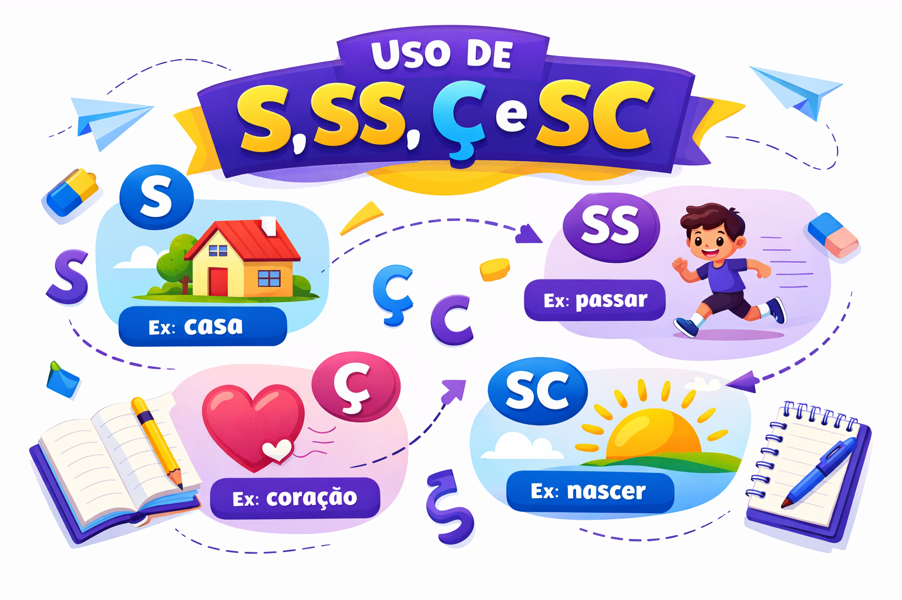

Uso de S, SS, Ç e SC: regras, exemplos e dicas de ortografia
A escolha entre S, SS, Ç e SC costuma gerar dúvidas porque diferentes grafias podem representar o mesmo som. Em palavras como sapo, massa, caça e nascer, encontramos representações do fonema /s/.
Entretanto, a pronúncia não determina sozinha a escrita. É necessário combinar conhecimentos sobre a posição das letras, a formação das palavras, os padrões ortográficos e o significado pretendido.
Neste guia, você encontrará regras e seus limites, exemplos comentados, famílias de palavras e um quiz com gabarito explicado.

Por que essas grafias causam dúvidas?
A escrita do português não estabelece uma correspondência de uma letra para cada som. Uma letra pode representar sons diferentes, e um mesmo som pode ser registrado de várias maneiras.
- S: sapo.
- SS: massa.
- Ç: caça.
- SC: nascer, na pronúncia brasileira usual.
- C: cidade.
Os símbolos entre barras, como /s/ e /z/, representam fonemas. A distinção entre eles pode ser percebida ao comparar “caça” e “casa”.
Saber que uma palavra apresenta /s/ não permite concluir automaticamente se ela deve ser escrita com S, SS, Ç, SC ou outra grafia.
Quando usar S?
S no início de palavras
Em palavras portuguesas como as seguintes, o S inicial representa /s/:
- sapo;
- semana;
- silêncio;
- sociedade;
- sucesso.
Isso não significa que todo /s/ inicial seja escrito com S: cidade, por exemplo, começa com C. A posição restringe algumas possibilidades, mas não resolve todas as escolhas.
S entre vogais
No padrão geral das palavras simples, o S entre vogais representa /z/, como em:
- casa;
- mesa;
- aviso;
- peso;
- rosa.
Esse padrão ajuda a explicar a diferença entre “casa” e “caça”. Ainda assim, processos de formação de palavras e limites entre elementos podem exigir análises específicas.
Atenção: “nariz” não é exemplo de S entre vogais. A palavra apresenta Z final. Já em “narizes”, esse Z aparece entre vogais.
S em sufixos e terminações produtivas
Reconhecer a formação da palavra ajuda em diversos casos. Observe alguns padrões:
| Padrão | Exemplos | Observação |
|---|---|---|
| -oso / -osa | famoso, cuidadosa, perigoso | Na formação desses adjetivos, emprega-se S. |
| -ês / -esa em gentílicos | português, portuguesa, francês, francesa | As formas apresentadas são escritas com S. |
| -ense em gentílicos | maranhense, cearense | O sufixo é escrito com S. |
| -íssimo / -íssima | belíssimo, claríssima | O sufixo de superlativo apresenta SS. |
É necessário identificar o sufixo efetivamente empregado. Palavras com terminações de som semelhante podem ter formações diferentes.
“-esa” e “-eza” não são a mesma formação
- Portuguesa: forma feminina de um gentílico.
- Beleza: substantivo relacionado ao adjetivo belo.
- Tristeza: substantivo relacionado ao adjetivo triste.
A semelhança sonora não autoriza escrever todas essas terminações da mesma maneira. O reconhecimento da estrutura da palavra contribui para a escolha.
Quando usar SS?
O SS é um dígrafo: duas letras que representam um único fonema. Nas palavras portuguesas usuais, aparece entre vogais e representa /s/.
- passar;
- massa;
- possível;
- professor;
- assunto;
- sucesso.
Nem todo /s/ entre vogais é escrito com SS
A posição entre vogais permite o emprego de SS, mas não o torna obrigatório em todas as palavras. Compare:
| Palavra | Grafia do /s/ destacado | Observação |
|---|---|---|
| massa | SS | O dígrafo aparece entre vogais. |
| caça | Ç | O Ç também aparece entre vogais. |
| tecido | C | O C representa /s/ antes de I. |
| piscina | SC | Na pronúncia brasileira usual, o conjunto representa /s/. |
A orientação “se o som de S estiver entre vogais, use SS” é insuficiente. Ela explica algumas correspondências, mas produziria erros em palavras como caça, tecido e piscina.
Quando usar Ç?
O Ç é a letra C acompanhada de cedilha. Nas palavras portuguesas, representa /s/ antes de A, O e U.
- Antes de A: caça, praça, criança.
- Antes de O: almoço, laço, poço.
- Antes de U: açúcar, açude.
Não se emprega Ç antes de E ou I na ortografia dessas palavras. Nessas posições, o próprio C pode representar /s/, como em cedo e cidade.
Ç não aparece no início de palavras portuguesas
As palavras portuguesas não começam por Ç. Para representar /s/ no início, podem aparecer outras grafias, como em sapo e cidade.
Antes de A, O e U também pode haver SS
A regra indica onde Ç pode aparecer, mas não determina que todo /s/ antes dessas vogais deva ser escrito com cedilha.
- caça e massa;
- laço e osso;
- açude e assunto.
A escolha depende da palavra. A vogal seguinte restringe as possibilidades, sem estabelecer uma regra universal de substituição.
Alternância entre C e Ç em formas verbais
Algumas mudanças gráficas preservam o fonema ao longo da conjugação:
- começar: começo, começa, comecei, comece;
- alcançar: alcanço, alcança, alcancei, alcance;
- dançar: danço, dança, dancei, dance.
Em comece, usa-se C antes de E. Em começa, usa-se Ç antes de A. A alteração gráfica não implica troca do fonema /s/ nesses segmentos.
Quando usar SC?
Em palavras como nascer, crescer, descer, piscina e disciplina, a sequência SC representa /s/ na pronúncia brasileira usual e é estudada como dígrafo.
Nesses exemplos, o C é seguido de E ou I. Isso não significa que toda palavra com /s/ antes dessas vogais deva conter SC: cedo, cidade e possível apresentam outras grafias.
SC nem sempre é dígrafo
A sequência também aparece em palavras como escola, escada e escuro. Nesses casos, S e C não representam conjuntamente o mesmo fonema /s/ de “nascer”.
A pronúncia do S pode variar regionalmente, mas o C dessas palavras representa /k/. Portanto, não se deve classificar toda ocorrência de SC como dígrafo.
Alternância entre SC e SÇ
| Infinitivo | Forma com SC | Forma com SÇ |
|---|---|---|
| Nascer | nasce | nasço |
| Crescer | cresce | cresço |
| Descer | desce | desço |
Em nasço, cresço e desço, a cedilha participa da manutenção de /s/ antes de O. Não se devem escrever essas formas com SC seguido de O.
Como as famílias de palavras ajudam?
Palavras relacionadas frequentemente conservam elementos gráficos. Estudá-las em conjunto facilita a memorização e permite perceber regularidades.
- Pesquisa: pesquisar, pesquisador, pesquisadora.
- Análise: analisar, analisado.
- Passo: passar, passagem.
- Nascer: nascimento, nascido.
- Crescer: crescimento, crescido.
Conservar a família não significa manter todas as letras
A formação e a flexão podem provocar alternâncias:
- começar → comece: alternância Ç/C;
- crescer → cresço: alternância SC/SÇ;
- discutir → discussão: mudança na formação do substantivo.
Assim, a família de palavras é uma ferramenta de análise, não uma garantia de que toda forma derivada repetirá exatamente a grafia da base.
Por que “analisar” é escrito com S?
O verbo analisar relaciona-se a análise, palavra que já apresenta S. O mesmo ocorre em pesquisa → pesquisar.
Essas relações ajudam a evitar grafias como “analizar” e “pesquizar”. Entretanto, não se deve concluir que todo verbo com a terminação sonora correspondente seja escrito com S.
- Analisar: relacionado a análise.
- Pesquisar: relacionado a pesquisa.
- Civilizar: formado com o sufixo -izar.
- Organizar: escrito com Z.
A consulta ao vocabulário ortográfico é importante quando a formação não é transparente ou quando há dúvida sobre a própria palavra de base.
“-ção”, “-são” e “-ssão”: por que não basta ouvir?
Palavras como educação, compreensão e discussão apresentam terminações com pronúncias próximas, mas grafias diferentes.
| Grafia | Exemplos | Estratégia |
|---|---|---|
| -ção | educação, organização, exceção | Observe a formação e confirme palavras menos familiares. |
| -são | compreensão, expansão, pretensão | Estude relações como compreender/compreensão. |
| -ssão | discussão, impressão, concessão | Observe relações como discutir/discussão e conceder/concessão. |
As relações ajudam a organizar o estudo, mas não autorizam uma regra única para todos os substantivos derivados de verbos. A história e a formação das palavras também participam da fixação de suas grafias.
Casa, caça e cassa: palavras diferentes
Nem toda diferença de escrita é um erro ortográfico. Algumas formas existem e apresentam sentidos distintos.
| Forma | Sentido no exemplo | Exemplo |
|---|---|---|
| Casa | Moradia | A casa foi reformada. |
| Caça | Atividade de caçar | A caça de animais é discutida no texto. |
| Cassa | Forma do verbo cassar | A autoridade cassa a licença após o processo. |
Na pronúncia usual, “casa” apresenta /z/ no segmento medial; “caça” e “cassa” apresentam /s/. Para escolher entre as formas, considere também o significado.
Escrever “cassa” no lugar de “casa”, quando se pretende indicar moradia, é inadequado nesse contexto. Isso não significa que a forma “cassa” seja inexistente.
Seção, sessão e cessão
Essas palavras costumam ter a mesma pronúncia no português brasileiro, mas apresentam grafias e significados diferentes.
- Seção: divisão, parte ou setor. Exemplo: “A seção de literatura foi atualizada”.
- Sessão: reunião ou período de uma atividade. Exemplo: “A sessão de cinema começou”.
- Cessão: ato de ceder. Exemplo: “A cessão do espaço foi autorizada”.
Nesse caso, ouvir a palavra não resolve a escolha. É necessário interpretar a frase e reconhecer a unidade de sentido empregada.
Palavras que merecem atenção na revisão
| Grafia adequada | Forma inadequada para essa palavra | Observação |
|---|---|---|
| passar | pasar | Emprega SS. |
| começou | comesou | Forma de começar, com Ç. |
| nascer | naser | Emprega SC. |
| cresço | cresco | Forma de crescer, com SÇ. |
| piscina | picina | Emprega SC. |
| exceção | excessão | Não confundir com excesso. |
| excesso | exceço | Emprega SS na parte final. |
| ascensão | ascenção | A parte final é escrita com S. |
| compreensão | compreenção | Emprega S. |
| analisar | analizar | Relaciona-se a análise. |
Cedilha e til são sinais diferentes
Em coração, a cedilha aparece sob o C e o til aparece sobre o A. Os sinais têm funções distintas.
A grafia “coraçao” já apresenta cedilha, mas falta o til. Portanto, não é adequado explicar esse erro como ausência de Ç.
Como estudar ortografia com mais eficiência?
- Registre a dúvida em uma frase: o contexto ajuda a reconhecer o sentido.
- Observe a posição das letras: algumas grafias são restringidas pela vogal seguinte.
- Procure a família: compare pesquisa/pesquisar e nascer/nascimento.
- Identifique possíveis alternâncias: começar/comece e crescer/cresço.
- Consulte uma fonte: confirme a grafia no VOLP e o significado em um dicionário.
- Reescreva a palavra em contexto: produza uma frase própria.
- Retome as dúvidas recorrentes: mantenha uma lista pessoal de revisão.
O corretor automático pode auxiliar, mas nem sempre reconhece a troca entre palavras existentes. “Sessão” e “seção”, por exemplo, podem passar pela correção ortográfica mesmo quando uma delas foi usada com sentido inadequado.
Como esse conhecimento ajuda na leitura e na escrita?
O estudo ortográfico permite revisar grafias e distinguir palavras de sentidos diferentes. Na leitura, ajuda a perceber por que “cessão do espaço” e “sessão no espaço” não informam a mesma situação.
Na produção textual, a revisão deve combinar forma e significado. Além de confirmar as letras, verifique se a palavra escolhida corresponde ao que se pretende comunicar.
Quiz sobre o uso de S, SS, Ç e SC
Marque uma alternativa por questão. Considere a grafia, a formação das palavras e o sentido no contexto.
1. Qual afirmação sobre o fonema /s/ está correta?
2. Em qual alternativa todas as palavras estão corretamente escritas?
3. Complete: “A _____ de cinema começou após a assinatura do termo de _____ do espaço”.
4. Qual alternativa apresenta corretamente formas dos verbos nascer, crescer e descer?
5. Sobre a palavra “cassa”, é correto afirmar que:
6. Qual afirmação descreve corretamente o emprego de Ç?
7. Considerando a pronúncia brasileira usual, em qual alternativa SC funciona como dígrafo nas duas palavras?
8. Em “começa” e “comece”, a alternância Ç/C:
9. Qual sequência apresenta todas as palavras corretamente escritas?
10. Por que um corretor automático pode não resolver a escolha entre “seção” e “sessão”?
Resumo do uso de S, SS, Ç e SC
- Um mesmo fonema pode ser representado por grafias diferentes.
- S inicial representa /s/ em palavras como sapo e semana.
- S entre vogais geralmente representa /z/ no padrão das palavras simples.
- SS representa /s/ e aparece entre vogais nas palavras portuguesas usuais.
- Nem todo /s/ entre vogais deve ser escrito com SS.
- Ç aparece antes de A, O e U, sem ocorrer no início de palavras portuguesas.
- SC é dígrafo em palavras como nascer e piscina, na pronúncia brasileira usual.
- SC não é o mesmo dígrafo em escola, escada e escuro.
- Famílias de palavras ajudam, mas podem apresentar alternâncias gráficas.
- Casa, caça e cassa são formas diferentes e exigem análise do contexto.
- A escolha entre seção, sessão e cessão depende do significado.
- A consulta ao VOLP e a dicionários complementa o estudo das regularidades.
Conclusão
Aprender o emprego de S, SS, Ç e SC exige distinguir o que pode ser explicado por uma regularidade e o que precisa ser confirmado na palavra. A posição das letras e a formação dos vocábulos ajudam, mas não tornam a escrita inteiramente previsível pela pronúncia.
Na revisão, observe também o significado. Uma palavra pode estar registrada no dicionário e, ainda assim, ser inadequada à frase. Combinar análise, consulta e prática em contexto torna o aprendizado mais consistente.
Perguntas frequentes sobre S, SS, Ç e SC
O som de S é sempre escrito com SS entre vogais?
Não. Entre vogais, esse som também pode ser representado por outras grafias, como Ç em “caça”, C em “tecido” e SC em “piscina”.
Quando se usa Ç?
Na ortografia das palavras portuguesas, Ç aparece antes de A, O e U, como em “caça”, “almoço” e “açúcar”. Não é usado antes de E ou I nem no início dessas palavras.
SC sempre é dígrafo?
Não. Em palavras como “nascer” e “piscina”, na pronúncia brasileira usual, SC representa um único fonema. Em palavras como “escola”, S e C não formam esse dígrafo.
Cassa é uma palavra errada?
Não. “Cassa” pode ser uma forma do verbo cassar, como em “A autoridade cassa a licença”. Casa, caça e cassa são formas diferentes, cuja escolha depende do sentido.
Como confirmar uma grafia?
Consulte o Vocabulário Ortográfico da Língua Portuguesa da Academia Brasileira de Letras e um dicionário para verificar a escrita e o sentido da palavra.
Continue estudando Gramática
Referências e fontes de consulta
- ACADEMIA BRASILEIRA DE LETRAS. Vocabulário Ortográfico da Língua Portuguesa — consulta on-line .
- BECHARA, Evanildo. Moderna gramática portuguesa. Rio de Janeiro: Nova Fronteira.
- CUNHA, Celso; CINTRA, Lindley. Nova gramática do português contemporâneo. Rio de Janeiro: Lexikon.
- CEGALLA, Domingos Paschoal. Novíssima gramática da língua portuguesa. São Paulo: Companhia Editora Nacional.
- Dicionário Priberam — verbete “cassa” .
- Ciberdúvidas — A sequência SC de nascer como dígrafo .
Explore Outros Conteúdos
Continue seus estudos acessando outras seções do site Mestre Kira: